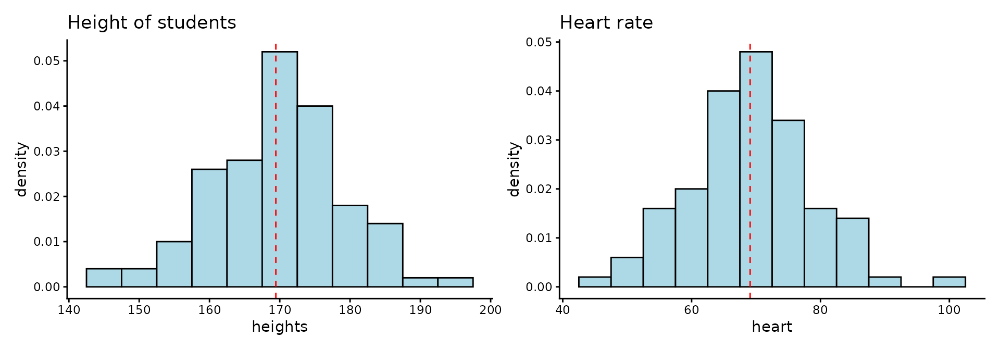

Code
library(patchwork)
library(ggplot2)
set.seed(108)
heights <- rnorm(100, mean = 170, sd = 10)
heart <- rnorm(100, mean = 70, sd = 10)
# heights
p1 <- ggplot(data.frame(heights), aes(x = heights)) +
geom_histogram(aes(y = after_stat(density)),
binwidth = 5, fill = "lightblue", color = "black") +
geom_vline(aes(xintercept = mean(heights)),
color = "red", linetype = "dashed") +
ggtitle("Height of students") +
theme_classic()
# heart rate
p2 <- ggplot(data.frame(heart), aes(x = heart)) +
geom_histogram(aes(y = after_stat(density)),
binwidth = 5, fill = "lightblue", color = "black") +
geom_vline(aes(xintercept = mean(heart)),
color = "red", linetype = "dashed") +
ggtitle("Heart rate") +
theme_classic()
p1 + p2